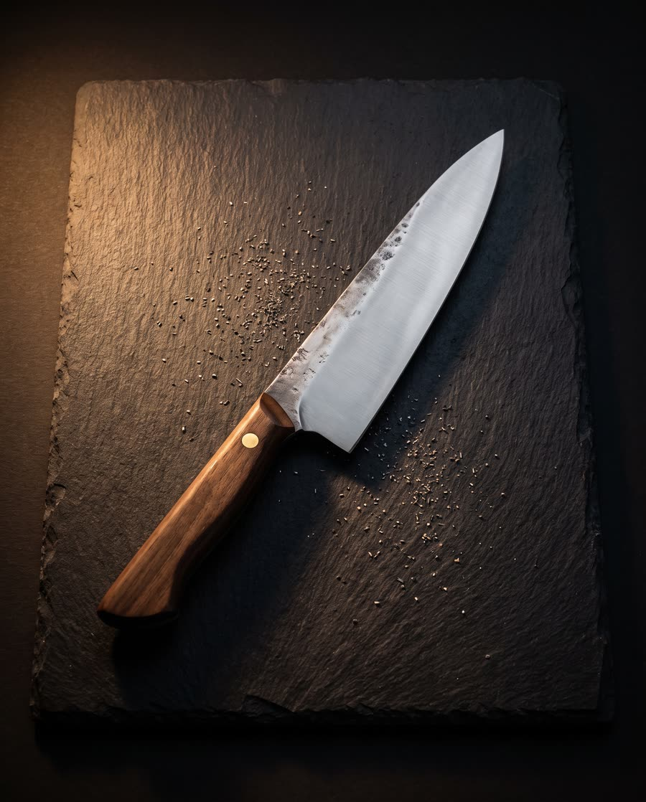
A knife you'll sharpen for thirty years.
Hand-forged kitchen knives from a two-person workshop on Kelham Island. Carbon steel, walnut or oak, thin behind the edge. Twelve a month, no more.
At the forge this week: batch 07, 52100 steel. Six blades normalised, two handles glued, one gyuto waiting for its final edge.
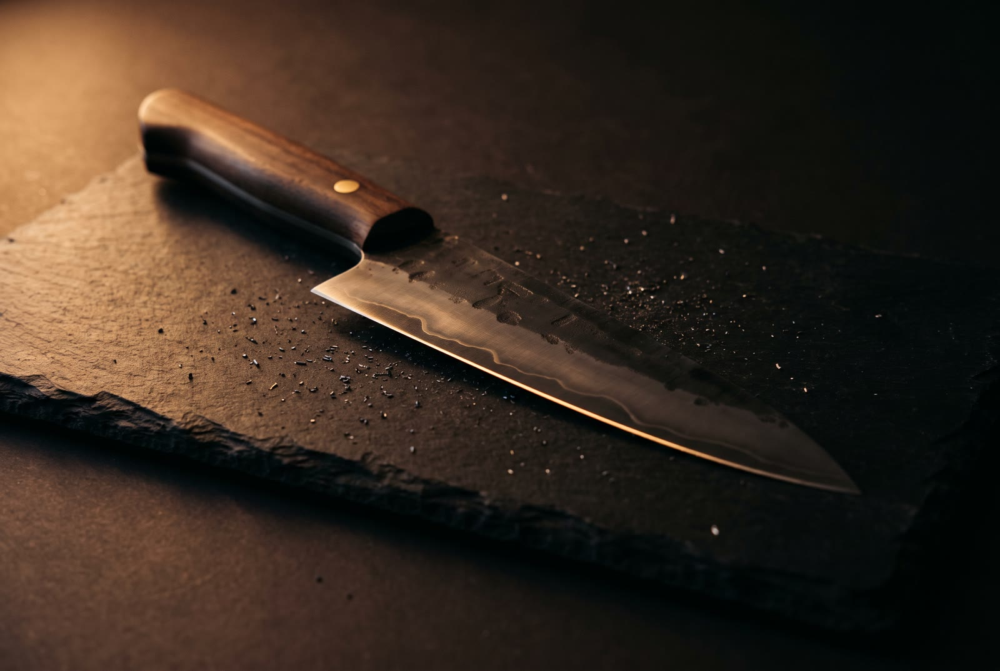
GYUTO 210, BATCH 07
- Steel
- 52100
- Hardness
- 62 HRC
- Behind the edge
- 1.2 mm
- Handle
- Walnut, brass pin
One bar, one fire, one knife
We don't stamp blanks. Every blade starts as a bar of steel, goes into the fire, and comes out the shape your hand asked for. Then it spends three weeks at the bench until it's thin, straight and quiet in the cut.
The steel is chosen for how it holds an edge, not for how it looks. The handle is shaped after the blade, to the balance of that blade. Nothing is finished until we've cut an onion with it.
12knives a month, made to order
62HRChardness after a two-stage temper
1.2mmbehind the edge, measured on every blade
8weeksfrom your first email to the post
Three days in the fire, three weeks at the bench.
The fire is fast and loud. The bench is slow and quiet. A knife needs both, in that order.
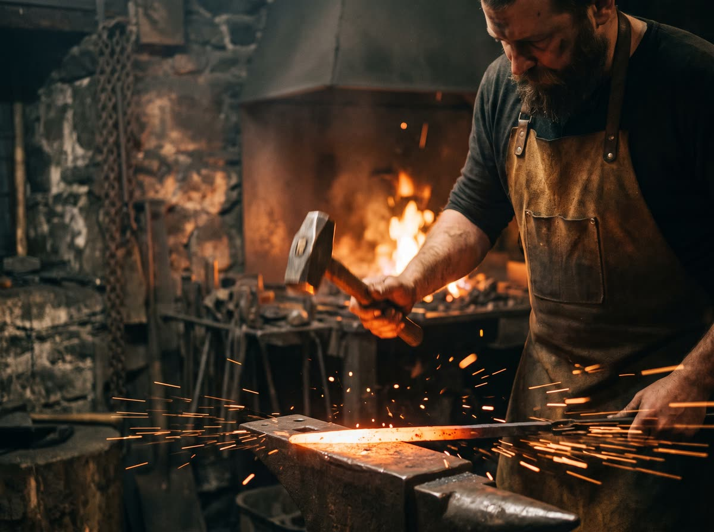
DAY ONE
Forge
The bar is drawn out and bevelled by hammer at a dull orange, so the grain follows the edge instead of crossing it.
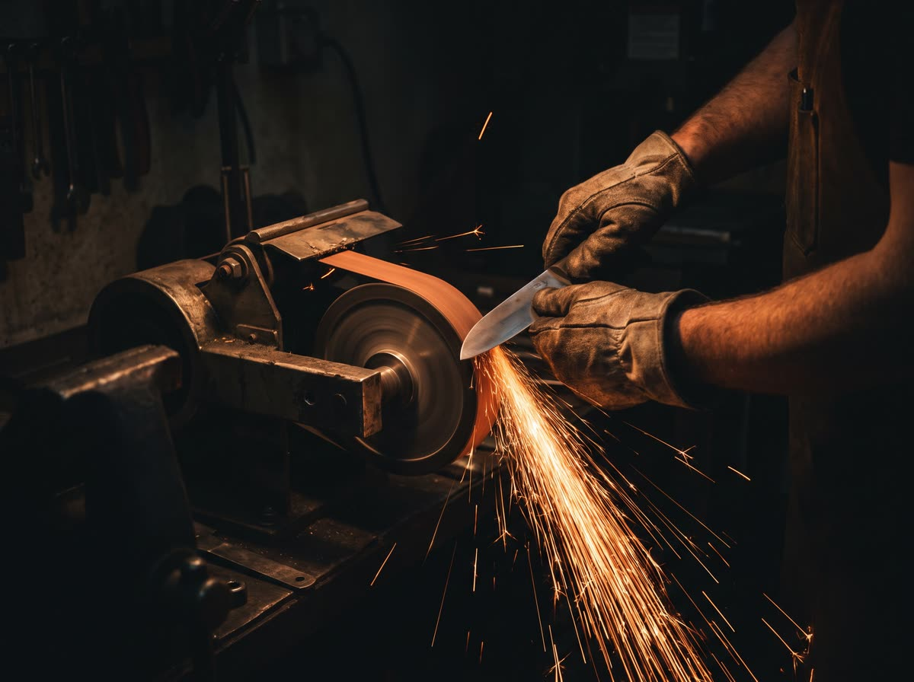
DAY TWO
Grind
Flat on a 2×72 belt, then by hand on stones. We stop at 1.2 mm behind the edge and check it with a caliper, every time.
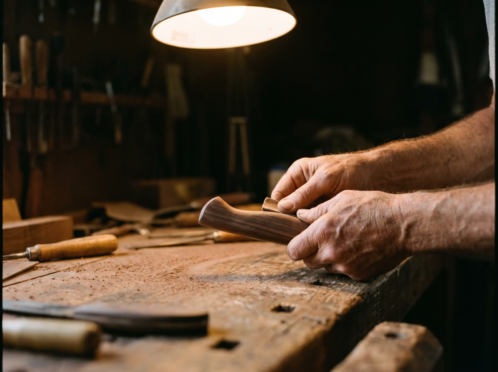
WEEKS TWO AND THREE
Handle
Walnut or oak, shaped to the balance of the finished blade, oiled six times and left to cure before it meets a cutting board.
The knives
Four shapes, made to order. Each one is forged from a single bar and posted with a sharpening card and a coat of camellia oil.
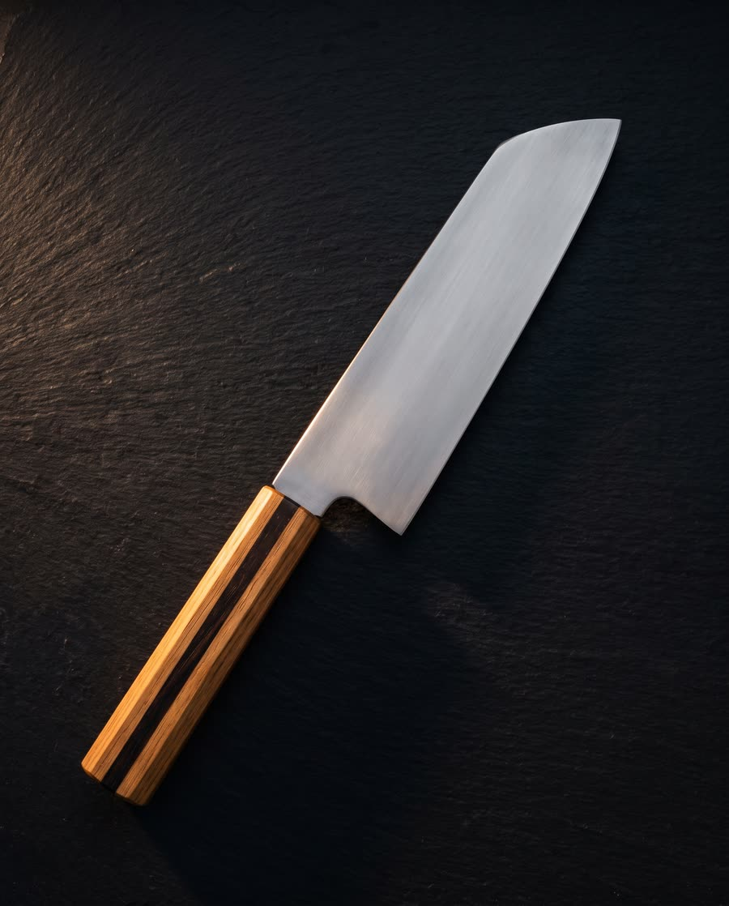
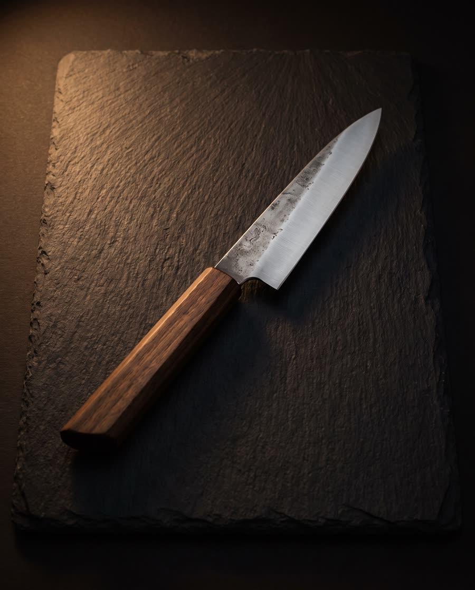
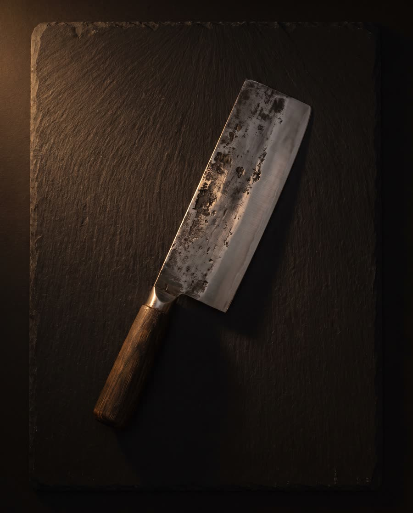
Five steels, one thickness behind the edge.
Pick by how you cook and how you look after your knives, not by the name. We'll tell you honestly which one suits.
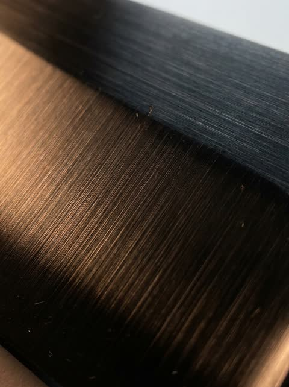
52100
Bearing steel. Takes a keen edge and keeps it. Rusts if you leave it wet.
- Edge
- Very high
- Toughness
- High
- Care
- Dry after use
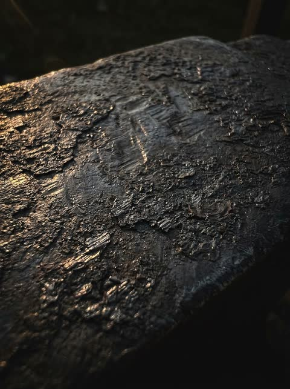
1084
Plain carbon. Simple, forgiving, easy to sharpen on any stone.
- Edge
- High
- Toughness
- Very high
- Care
- Dry after use
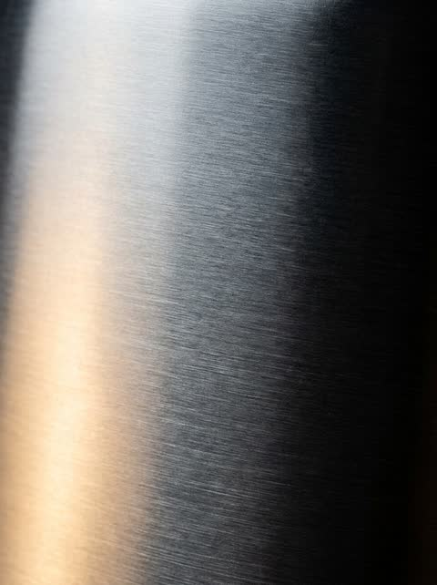
AEB-L
Fine-grained stainless. The one for a busy kitchen that won't dry its knives.
- Edge
- High
- Toughness
- High
- Care
- None
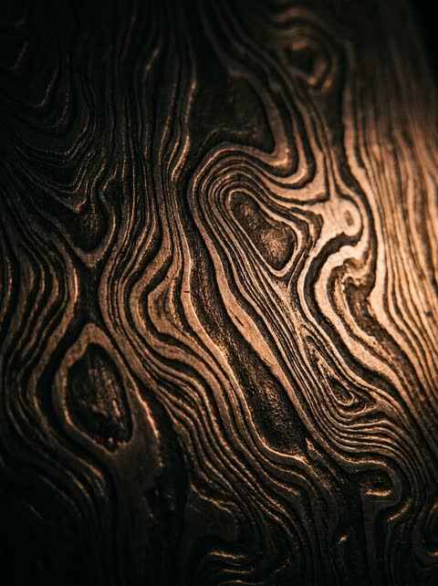
Damascus
Layers of 1084 and 15N20, etched. Cuts like 1084 and shows its work.
- Edge
- High
- Toughness
- High
- Care
- Dry, oil weekly
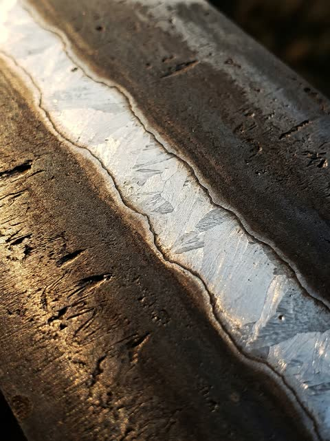
San mai
A hard core wrapped in soft iron. Thin at the edge, calm everywhere else.
- Edge
- Very high
- Toughness
- Very high
- Care
- Dry after use
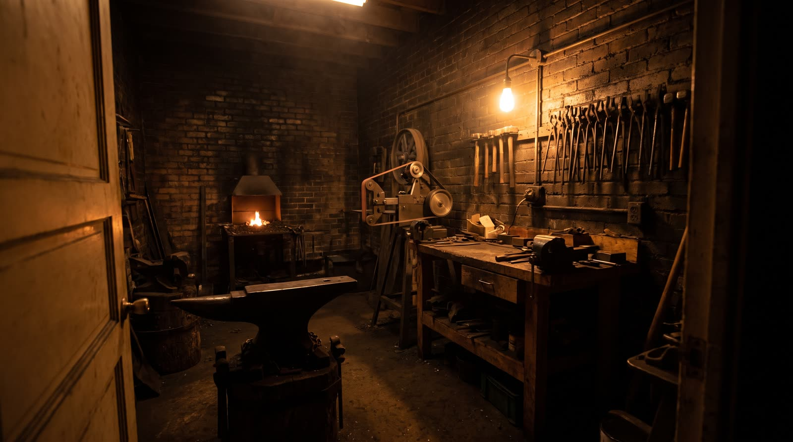
From bar to blade
Five stages, always in the same order. If a blade fails a check, it goes back a stage, not forward.
- 1Normalisethree heat cycles to refine the grainDay 1
- 2Forge to shapedrawn out by hammer, bevels set hotDay 1
- 3Grind2×72 belt, then stones to 1.2 mmDay 2
- 4Heat-treatquench in fast oil, two tempers, hardness checkedDay 3
- 5Handle and edgefitted, oiled, cured, then the final edge on stonesWeeks 2 to 3
Commission a knife.
Tell us what you cook and how you sharpen. We'll suggest a shape, a steel and a handle, and send you a drawing before we light the forge. Lead time is eight weeks.
WHAT YOU GET
- One knife, forged and finished by hand
- A sharpening card for its steel
- Free resharpening for life, postage both ways
- A drawing to keep